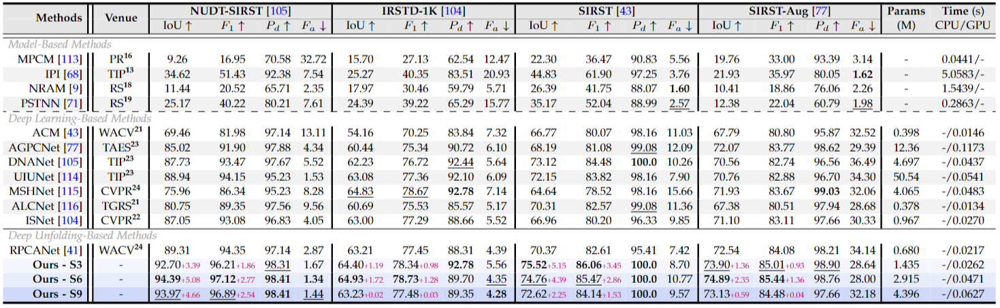

Robust principal component analysis (RPCA) decomposes an observation matrix into low-rank background and sparse object components. This capability has enabled its application in tasks ranging from image restoration to segmentation. However, traditional RPCA models suffer from computational burdens caused by matrix operations, reliance on finely tuned hyperparameters, and rigid priors that limit adaptability in dynamic scenarios. To solve these limitations, we propose RPCANet++, a sparse object segmentation framework that fuses the interpretability of RPCA with efficient deep architectures. Our approach unfolds a relaxed RPCA model into a structured network comprising a Background Approximation Module (BAM), an Object Extraction Module (OEM), and an Image Restoration Module (IRM). To mitigate inter-stage transmission loss in the BAM, we introduce a Memory-Augmented Module (MAM) to enhance background feature preservation, while a Deep Contrast Prior Module (DCPM) leverages saliency cues to expedite object extraction. Extensive experiments on diverse datasets demonstrate that RPCANet++ achieves state-of-the-art performance under various imaging scenarios. We further improve interpretability via visual and numerical low-rankness and sparsity measurements. By combining the theoretical strengths of RPCA with the efficiency of deep networks, our approach sets a new baseline for reliable and interpretable sparse object segmentation.
In the context of segmentation orientated RPCA tasks, our objective is to estimate low rank background \(\mathbf{B}\in \mathbb{R}^{m \times n}\) and extract the sparse object matrix \(\mathbf{O}\in \mathbb{R}^{m \times n}\). For an image \(\mathbf{D}\in \mathbb{R}^{m \times n}\), we transform the segmentation model into the following optimization framework: \begin{equation} \min \limits_{\mathbf{B},\mathbf{O}} rank(\mathbf{B}) + \lambda \left\| \mathbf{O} \right\|_0 \quad s.t.~\mathbf{D} = \mathbf{B} + \mathbf{O} \enspace, \label{eq_RPCA} \end{equation} where we signify \(\lambda\) as a trade-off coefficient, and the term \({\left\| \cdot \right\|_0}\) denotes the \(l_0\)-norm, which is defined as the count of non-zero elements within a matrix. However, when facing complex scenarios, the background can exhibit varying degrees of complexity, rendering a solitary nuclear norm or rank function insufficient for encapsulating the practical constraints. Similarly, the sparsity of object elements can vary, making the exclusive use of the \(l_0\) or \(l_1\)-norm potentially inadequate. Consequently, we propose a more generalized formulation of the problem. Here, we employ \(\mathcal{R}(\mathbf{B})\) and \(\mathcal{S}(\mathbf{O})\) as constraints that incorporate prior knowledge of the background and object images, individually: \begin{equation} \min \limits_{\mathbf{B},\mathbf{O}} \mathcal{R}(\mathbf{B}) + \lambda \mathcal{S}(\mathbf{O}) \quad s.t.~\mathbf{D} = \mathbf{B} + \mathbf{O} \enspace. \label{eq_relaxPCP} \end{equation}
This motivate us to solve the above optimization problem in an iterative manner and unfolds the above optimization problem into a deep network as follows:
\(\textbf{RPCANet}^{++}\) framework unfolds iterative model-driven closed-form equations in deep network design and comprises corresponding \(K\) stages. Transmissive elements are presented in different colors: \(\mathbf{D}\) for the restoration image, \(\mathbf{B}\) for the low rank background, \(\mathbf{O}\) for the sparse object matrix, \(\rho\) for the learnable parameter, and \([\mathcal{B}_h,\mathcal{B}_c]\) for the latent background features.
In the context of deep unfolding, the network is architectured to iteratively yield guided results congruent with an algorithm’s unrolled stages. Demonstrating outcomes at each stage is vital for model validation.

Performance metrics, including IoU (%), F1 (%), Pd (%), Fa (10-5 ), and runtime are evaluated for various methods on datasets NUDT-SIRST, IRSTD-1K, SIRST, and SIRST-AUG. Parameter statistics for data-driven approach are encapsulated within the second column (Find more details in the main manuscript).
Refer to the arxiv paper link above for more details on qualitative, quantitative, and ablation studies.
Heatmap results of different stages' \(\mathbf{O}^{k}\) of our RPCANet++ on various scenarios from the IRSTD task.
CHN Version
ENG Version
@misc{wu2025rpcanet_pp,
title={RPCANet++: Deep Interpretable Robust PCA for Sparse Object Segmentation},
author={Fengyi Wu and Yimian Dai and Tianfang Zhang and Yixuan Ding and Jian Yang and Ming-Ming Cheng and Zhenming Peng},
year={2025},
eprint={2508.04190},
archivePrefix={arXiv},
primaryClass={cs.CV},
url={https://arxiv.org/abs/2508.04190},
}@InProceedings{Wu_2024_WACV,
author = {Wu, Fengyi and Zhang, Tianfang and Li, Lei and Huang, Yian and Chen, Mingming and Peng, Zhenming},
title = {RPCANet: Deep Unfolding RPCA Based Infrared Small Target Detection},
booktitle = {Proceedings of the IEEE/CVF Winter Conference on Applications of Computer Vision (WACV)},
month = {January},
year = {2024},
pages = {4809-4818}
}